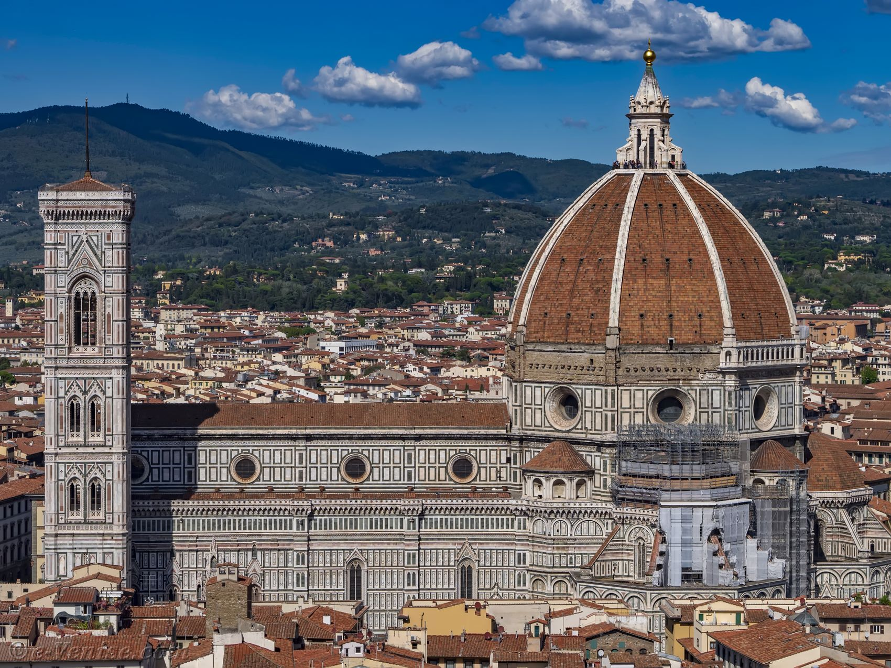
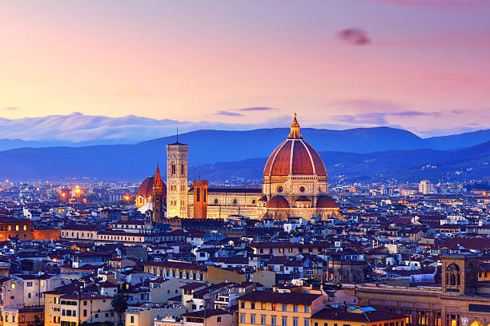
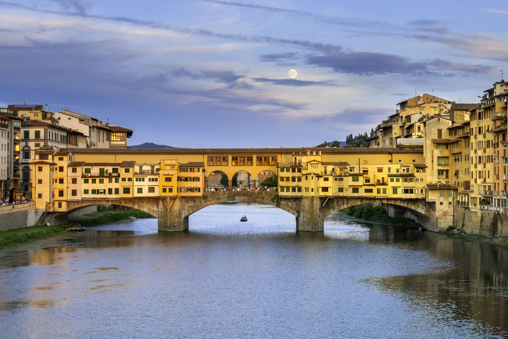
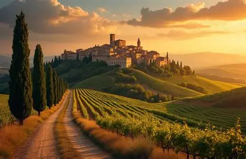
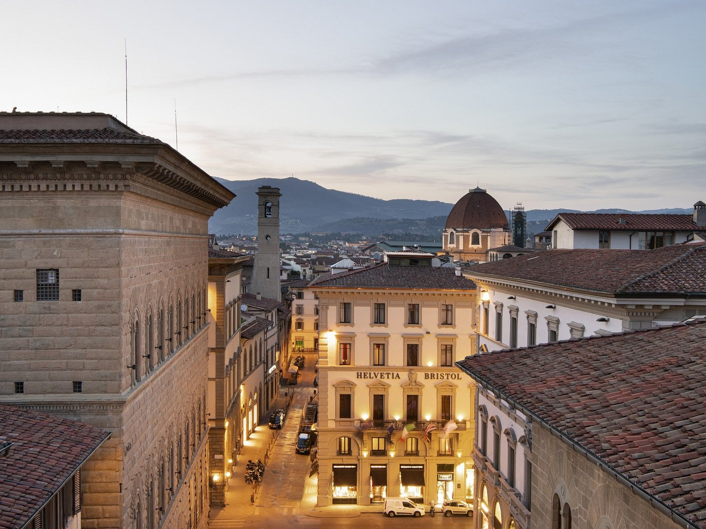
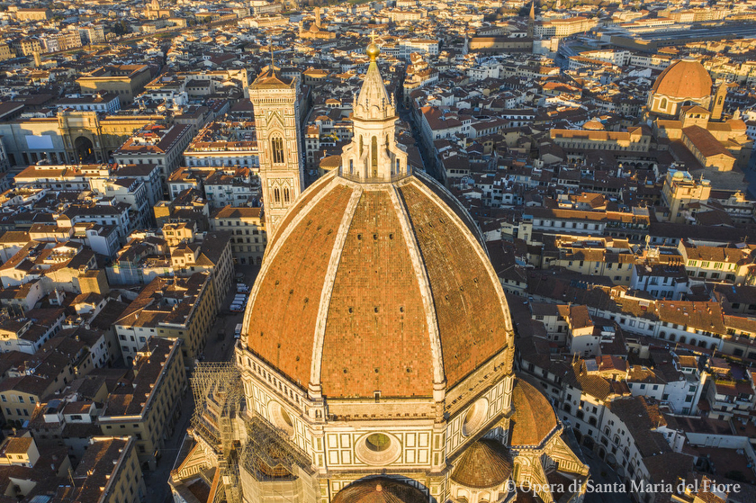
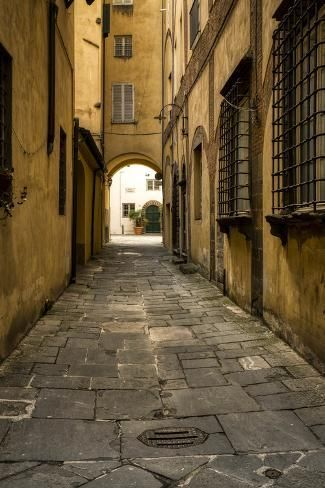

JOUR 01
Arrivée à Florence
Installation à l'hôtel, première découverte du centre historique et promenade dans les rues de Florence.
UNE VILLE À DÉCOUVRIR
Florence est une ville italienne réputée pour son architecture, son art et son histoire. Entre ses ruelles anciennes, ses monuments emblématiques et ses places animées, elle offre une expérience unique au cœur de la Toscane.
Pendant ce séjour, découvrez les lieux incontournables de la ville, profitez de son ambiance et laissez-vous séduire par son patrimoine exceptionnel.

VOTRE SÉJOUR

Installation à l'hôtel, première découverte du centre historique et promenade dans les rues de Florence.

Visite de la cathédrale Santa Maria del Fiore, découverte du Ponte Vecchio et des places historiques.

Journée consacrée aux paysages de Toscane et à la découverte de ses villages typiques.

VOYAGE SANS SOUCI
EN IMAGES



PRÉPAREZ VOTRE DÉPART
Prix indicatifs par personne pour 7 jours.
| Saison | Période | Prix |
|---|---|---|
| Printemps | Mars à mai | 990 € |
| Été | Juin à août | 1 190 € |
| Automne | Septembre à novembre | 1 050 € |
| Hiver | Décembre à février | 890 € |
Préparez votre prochain voyage et demandez votre devis personnalisé.
Demander un devis